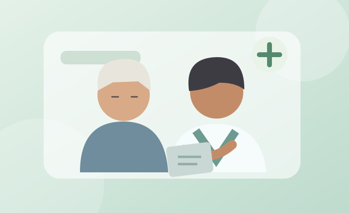

Cuida tu cuerpo.
Cuidar tu salud no tiene por qué ser complicado. Empieza por observar cómo te sientes y buscar orientación cuando la necesites.
Ver consejos
Tu salud merece atención
Los controles preventivos y los hábitos cotidianos ayudan a mantener tu bienestar. El cuidado es personal: cada persona tiene necesidades diferentes.
Cuatro hábitos que puedes practicar
Habla con tu profesional de salud
Pregunta por los controles, vacunas y exámenes recomendados para ti.
Ten tus medicamentos organizados
Lleva una lista actualizada y no cambies dosis por tu cuenta.
Cuida tus sentidos
Comenta si has notado cambios en tu visión, audición o equilibrio.
Presta atención al descanso
Mantén una rutina de sueño y consulta si tienes dificultades frecuentes.
Antes de una consulta médica
- Anota tus preguntas y síntomas para que no se te olviden.
- Lleva información sobre tus medicamentos y antecedentes importantes.
- Si te ayuda, pide a alguien de confianza que te acompañe.
Si presentas dolor fuerte en el pecho, dificultad grave para respirar o señales repentinas de un accidente cerebrovascular, busca ayuda de emergencia de inmediato.
Preguntas frecuentes
¿Debo hacerme los mismos controles que otras personas de mi edad?
No necesariamente. Tu profesional debe recomendarte controles según tu historia de salud y tus necesidades.
¿Qué hago si no entiendo una indicación?
Pide que te la expliquen con palabras sencillas o que te la anoten.
¿Tienes una pregunta?
Puedes escribirnos desde la página de contacto.